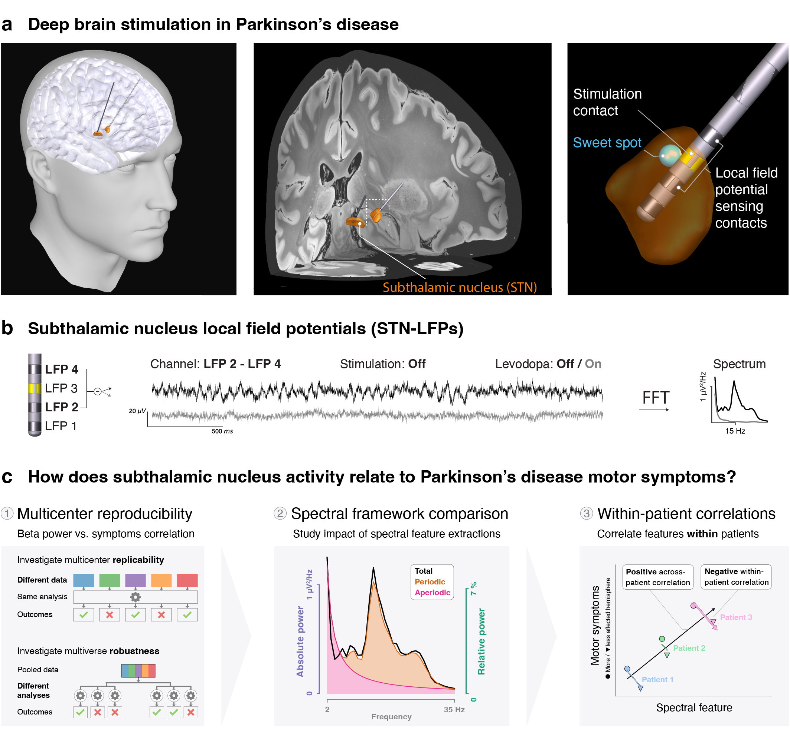
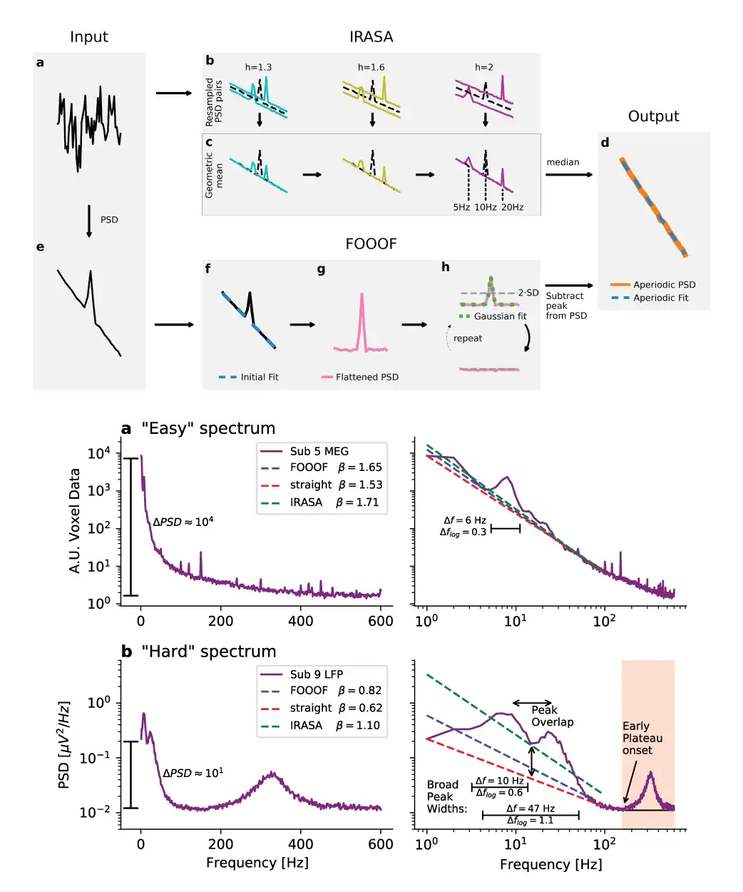
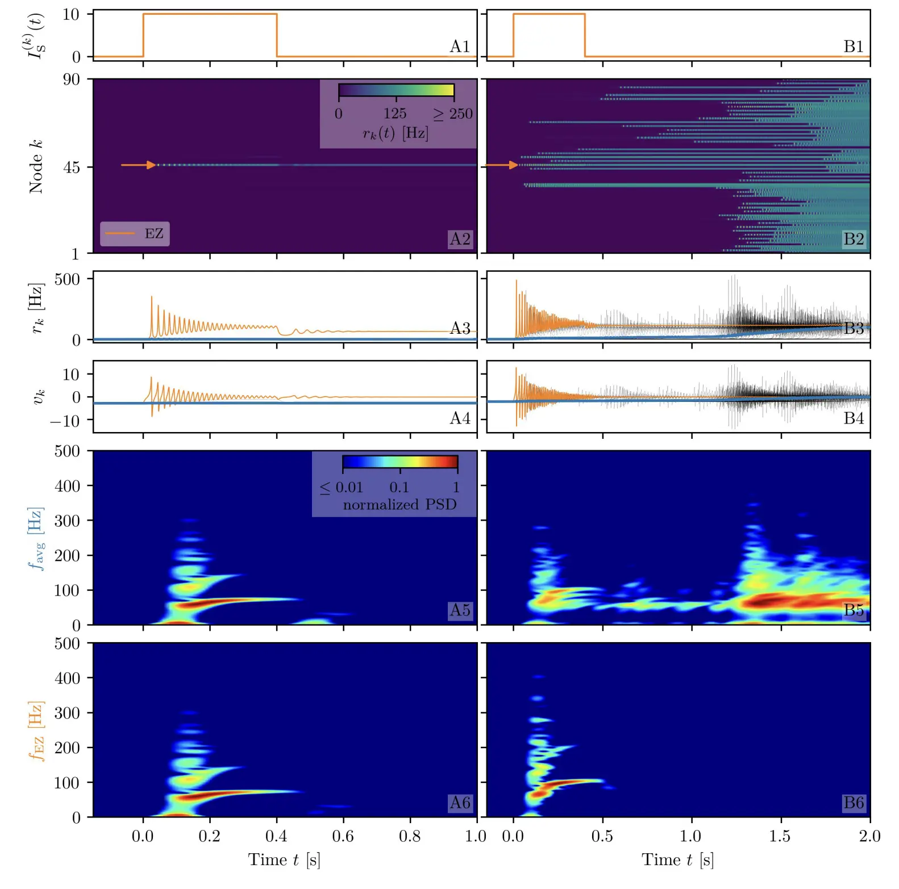
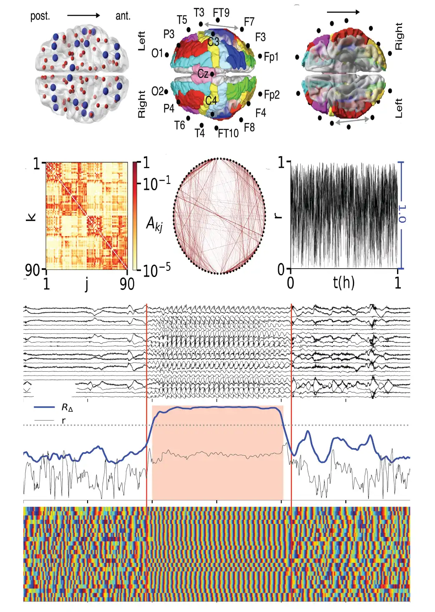

 |
eBioMedicine
2025
Parkinson's disease is linked to increased beta oscillations in the subthalamic nucleus, which correlate with motor symptoms. However, findings across studies have varied. Our standardized analysis of multicenter datasets shows that small sample sizes contributed to these discrepancies—a challenge we address by pooling datasets into one large cohort (n=119). Moving beyond beta power, we disentangled spectral components reflecting distinct neural processes. Combining aperiodic offset, low beta, and low gamma oscillations explained significantly more variance in symptom severity than beta alone. Moreover, interhemispheric within-patient analyses showed that, unlike beta oscillations, aperiodic broadband power–likely reflecting spiking activity–was increased in the more affected hemisphere. These findings identify aperiodic broadband power as a potential biomarker for adaptive deep brain stimulation and provide novel insights into the relationship between subthalamic hyperactivity and motor symptoms in human Parkinson's disease.
Gerster M., Waterstraat G., Binns T.S., Darcy N., Wiest C., Köhler R.M., Vanhoecke J., West T.O., Sure M., Todorov D., Radzinski L., et. al, 2025. Beyond beta rhythms: subthalamic aperiodic broadband power scales with Parkinson's disease severity–a cross-sectional multicentre study. eBioMedicine, Volume 122, 105988. https://doi.org/10.1016/j.ebiom.2025.105988.
|
 |
Neuroinformatics
2022
Electrophysiological power spectra typically consist of two components: An aperiodic part usually following an 1/f power law P ∝ 1∕f 𝛽 and periodic components appearing as spectral peaks. While the investigation of the periodic parts, commonly referred to as neural oscillations, has received considerable attention, the study of the aperiodic part has only recently gained more interest. The periodic part is usually quantified by center frequencies, powers, and bandwidths, while the aperiodic part is parameterized by the y-intercept and the 1/f exponent 𝛽. For investigation of either part, however, it is essential to separate the two components. In this article, we scrutinize two frequently used methods, FOOOF (Fitting Oscillations & One-Over-F) and IRASA (Irregular Resampling Auto-Spectral Analysis), that are commonly used to separate the periodic from the aperiodic component. We evaluate these methods using diverse spectra obtained with electroencephalography (EEG), magnetoencephalography (MEG), and local field potential (LFP) recordings relating to three independent research datasets. Each method and each dataset poses distinct challenges for the extraction of both spectral parts. The specific spectral features hindering the periodic and aperiodic separation are highlighted by simulations of power spectra emphasizing these features. Through comparison with the simulation parameters defined a priori, the parameterization error of each method is quantified. Based on the real and simulated power spectra, we evaluate the advantages of both methods, discuss common challenges, note which spectral features impede the separation, assess the computational costs, and propose recommendations on how to use them.
Gerster, M., Waterstraat, G., Litvak, V., Lehnertz, K., Schnitzler, A., Florin, E., Curio, G. and Nikulin, V., 2022. Separating neural oscillations from aperiodic 1/f activity: challenges and recommendations. Neuroinform 20, 991–1012 (2022). https://doi.org/10.1007/s12021-022-09581-8.
|
 |
Frontiers in Systems Neuroscience
2021
Dynamics underlying epileptic seizures span multiple scales in space and time, therefore, understanding seizure mechanisms requires identifying the relations between seizure components within and across these scales, together with the analysis of their dynamical repertoire. In this view, mathematical models have been developed, ranging from single neuron to neural population. In this study, we consider a neural mass model able to exactly reproduce the dynamics of heterogeneous spiking neural networks. We combine mathematical modeling with structural information from non invasive brain imaging, thus building large-scale brain network models to explore emergent dynamics and test the clinical hypothesis. We provide a comprehensive study on the effect of external drives on neuronal networks exhibiting multistability, in order to investigate the role played by the neuroanatomical connectivity matrices in shaping the emergent dynamics. In particular, we systematically investigate the conditions under which the network displays a transition from a low activity regime to a high activity state, which we identify with a seizure-like event. This approach allows us to study the biophysical parameters and variables leading to multiple recruitment events at the network level. We further exploit topological network measures in order to explain the differences and the analogies among the subjects and their brain regions, in showing recruitment events at different parameter values. We demonstrate, along with the example of diffusion-weighted magnetic resonance imaging (dMRI) connectomes of 20 healthy subjects and 15 epileptic patients, that individual variations in structural connectivity, when linked with mathematical dynamic models, have the capacity to explain changes in spatiotemporal organization of brain dynamics, as observed in network-based brain disorders. In particular, for epileptic patients, by means of the integration of the clinical hypotheses on the epileptogenic zone (EZ), i.e., the local network where highly synchronous seizures originate, we have identified the sequence of recruitment events and discussed their links with the topological properties of the specific connectomes. The predictions made on the basis of the implemented set of exact mean-field equations turn out to be in line with the clinical pre-surgical evaluation on recruited secondary networks.
Gerster, M., Taher, H., Škoch, A., Hlinka, J., Guye, M., Bartolomei, F., Jirsa, V., Zakharova, A. and Olmi, S., 2021. Patient-specific network connectivity combined with a next generation neural mass model to test clinical hypothesis of seizure propagation. Front. Syst. Neurosci. 15:675272. https://doi.org/10.3389/fnsys.2021.675272.
|
 |
Chaos
2020
We study patterns of partial synchronization in a network of FitzHugh–Nagumo oscillators with empirical structural connectivity measured in human subjects. We report the spontaneous occurrence of synchronization phenomena that closely resemble the ones seen during epileptic seizures in humans. In order to obtain deeper insights into the interplay between dynamics and network topology, we perform long-term simulations of oscillatory dynamics on different paradigmatic network structures: random networks, regular nonlocally coupled ring networks, ring networks with fractal connectivities, and small-world networks with various rewiring probability. Among these networks, a small-world network with intermediate rewiring probability best mimics the findings achieved with the simulations using the empirical structural connectivity. For the other network topologies, either no spontaneously occurring epileptic-seizure-related synchronization phenomena can be observed in the simulated dynamics, or the overall degree of synchronization remains high throughout the simulation. This indicates that a topology with some balance between regularity and randomness favors the self-initiation and self-termination of episodes of seizure-like strong synchronization.
Gerster, M., Berner, R., Sawicki, J., Zakharova, A., Škoch, A., Hlinka, J., Lehnertz, K. and Schöll, E., 2020. FitzHugh–Nagumo oscillators on complex networks mimic epileptic-seizure-related synchronization phenomena. Chaos, 30(12), p.123130. https://doi.org/10.1063/5.0021420.
|